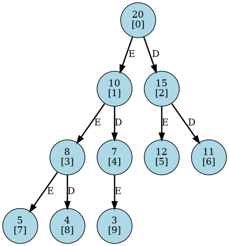

Árvore Heap Máximo
Considere um vetor L de tamanho N, contendo N números inteiros. Os elementos de L são indexados de 0 a N − 1.
Como exemplo, suponha que N = 10 e que o vetor L contenha os valores mostrados na Figura , indexados de 0 a 9.
O objetivo é representar esse vetor como uma árvore binária que satisfaça as propriedades de um heap máximo.
A construção da árvore segue o mapeamento implícito utilizado na representação de heaps binários, no qual:
Tarefa:
Dado um vetor L, construa a árvore binária correspondente que represente um heap máximo.
Para o vetor do exemplo acima, a árvore resultante é apresentada na Figura 1.
